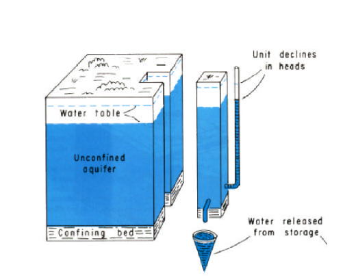
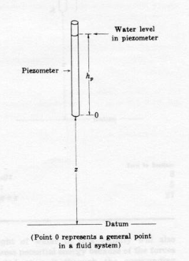
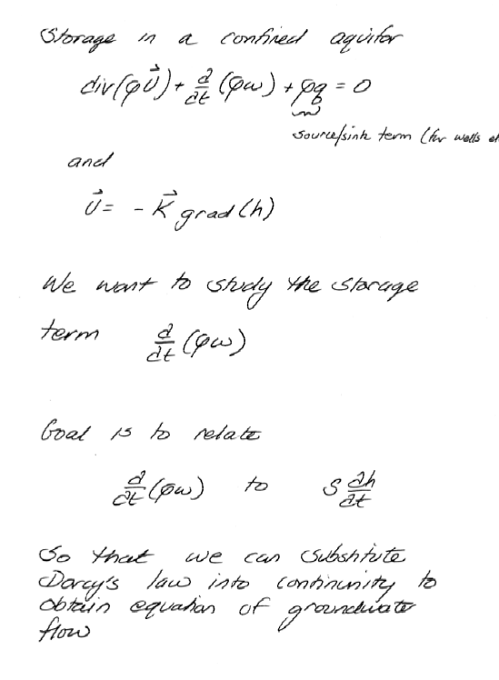

9. Groundwater Fundamentals & Flow Equations#
Readings#
Gupta pp. 127-132
Videos#
Scripts/Spreadsheets#
Find gradient from 3 wells Model1_Gradient.xls
Find gradient from 3 wells Model1_Gradient.xlsx (xml extensions)
Constant Head Permeameter Model2_CHPerm.xlsx (xml extensions)
Falling Head Permeameter Model3_FHPerm.xls
Falling Head Permeameter Model3_FHPerm.xlsx (xml extensions)
Groundwater and Aquifers#
Groundwater hydrology is the study of water beneath the surface of the Earth

Groundwater usually is found in porous media (not underground rivers). A porous medium is comprised of solid space and void or pore space. Liquids and gasses are found in the pore space, the solid matrix forms the physical structure of aquifers and other geologic formations of interest.

The ratio of total pore volume to bulk medium volume is the porosity.
Aquifers#
An aquifer is an underground layer of water-bearing rock or sediment that stores and transmits groundwater. It is a critical resource for supplying fresh water to wells, springs, and natural ecosystems.
Store water (water bearing formations)
Transmit water (in economically useful quantities)
Aquifers are classified as confined, unconfined, and/or leaky (a single unit can exhibit all three classifications).
A confined aquifer draws its water from a geologic formation upper bounded by a layer that does not readily transmit water. Visualize a pipe filled with sand; the interior of the pipe will behave like a confined aquifer.

An unconfined aquifer draws its water from a geologic formation that is not upper bounded - the aquifer has the equivalent of a free surface. A bathtub filled with sand and water will behave like an unconfined aquifer.
A leaky aquifer is a hybrid of the two extremes, and there can be leakage between layers. Most real aquifers are somewhat leaky.

Material Properties#
Porosity#
Porosity is the ratio of total pore volume to bulk medium volume;
\(n = \frac{V_{pore}}{V_{total}}\)
Range in values is large for geologic materials
Specific Yield#
A concept related to porosity is the specific yield \(S_y\) of a material.
\(S_y\) is the amount of water that will drain from a porous medium under the influence of gravity.
\(S_r\) is the amount of water left behind in the material and is called the specific retention.

The specific yield is important in water supply as it represents the amount of water that can drain to wells. Thus when making groundwater reservoir estimates the water in storage should be based on the specific yield and not porosity.
Two additional related terms are: water content and saturation.
Storativity#
Storativity refers to the ability of a porous medium to store water within its bulk.
The mechanisms of storage are:
draining and filling of the pore space
compression/decompression of the water, and
compression/decompression of the solids.
In an unconfined aquifer the draining and filling of the pore space is the most significant mechanism.

\(S=\frac{V_{water}}{\Delta h A}\)
In a confined aquifer, the compression and decompression of the solids structure is the primary mechanism of storage.

\(S=\frac{V_{water}}{\Delta h A}\)
The formula is the same for either case, but the magnitude os \(S\) is different (by a lot!)
Storage per unit thickness of aquifer is called the specific storage.
Tip
The mechanisms of storage are:
draining and filling of the pore space (All aquifers)
compression/decompression of the water, and the solids matrix (Confined aquifers)
You should be able to use the storage formulas to be able to estimating gain/loss in storage from mapped water levels
Average Linear Velocity (in a porous media)#
The discharge \(Q\) divided by cross sectional flow area \(A\) in a pipe or open channel is the velocity \(V\)
In groundwater, some of the area is solid, so the porosity enters the equation as:
\(V=\frac{Q}{nA}\)
The figure below illustrates the concept.

If the garbage cans are identical, the velocity of the free surface in the marble filled can is bigger.
Transmissivity, permeability, hydraulic conductivity
Hydraulic Gradient#
Hydraulic gradient is change in head per unit distance and provides the driving force for groundwater to flow. It is the same concept as the slope of the EGL in pipe hydraulics.
Equation(s) of Motion#
Darcy’s Law#
Permeability refers to the ease which water can flow through a porous material under a specified gradient.
Consider the head loss equation for a pipe.
\(\Delta h = f\frac{L}{D}\frac{V^2}{2g}\)
Solve for \(V\)
\(V=\frac{2g D \Delta h}{V f L} \)
or
\(V = \frac{2g \cdot D}{f \cdot V} \frac{\Delta h}{L}\)
The right most term is the hydraulic gradient. Now multiply by the pipe cross sectional area:
\(Q = [\frac{2g \cdot D}{f \cdot V}] A \frac{\Delta h}{L}\)
The term in the square brackets is the inverse of the pipe permeability (dependent on \(V\), \(Re\), and \(k_s\))
Permeable materials offer little resistance, while impermeable materials offer a lot of resistance. In the pipe analog, large \(k_s\) would cause a large \(f\) for any \(Re\) maening that pipe has small permeability.
Darcy’s law was established experimentally 1856.

Total discharge through a filter, \(Q\), was proportional to:
Cross sectional area of flow, \(A\),
head loss \(h_1 − h_2\).
And \(Q\), was inversely proportional to:
the length of the filter column, \(L\).
The relationship is expressed as
\(Q \propto A\frac{h_1-h_2}{L}\)
The head loss can be expressed as \(\Delta h\) so the expression is
\(Q \propto A\frac{\Delta h}{L}\)
The constant of proportionality is called the hydraulic conductivity, \(K\) so Darcy’ law is
\(Q = KA\frac{\Delta h}{L}\)
If we examine the two flow models we observe the two models have the same structure:
Pipe:\(Q =[\frac{2g \cdot D}{f \cdot V}]A\frac{\Delta h}{L}\)
Filter:\(Q =KA\frac{\Delta h}{L}\)
So the Hydraulic conductivity plays the same role in the relationship between flow and head loss in filter flow as does the square bracket term in the pipe flow model.
Note
The pipe flow is non-linear, notice the square bracket contains \(V\) both explicitly, and in the friction factor by its dependence on Reynolds number.
The constant of proportionality is called the hydraulic conductivity. Permeability is sometimes used interchangeably. In reservoir engineering the permeability is related to K, but not numerically identical.
\(K = \frac{k \rho g}{\mu}\)
9.1 Groundwater Flow Equations#
Darcy’s law combined with storage principles (conservation of mass in a control volume) are used to create partial differential equations that relate head in an aquifer to position and boundary conditions.
Warning
The derivation presented below is intended to establish plausibility rather than strict rigor. Certain assumptions and simplifications are made to motivate the commonly used groundwater flow equations. A more formal and mathematically complete derivation is covered in the dedicated groundwater design course.
Discharge#
Discharge is the volume of flow per unit time in a fluid system. It has dimensions of \(\frac{L^3}{t}\).
The figure is a schematic of a conduit completely filled with fluid. Dye markers are placed at location \(x\) at some time \(t\).
A short period later, the position of the dye markers has moved to the location shown on the diagram. The product of the area of the conduit and the distance swept by the dye markers is a volume. The ratio of this volume and the time it takes for this volume to be defined is called the volumetric flow rate.
In mathematical terms, the area of the conduit is \(A\) . The volume of fluid that passed \(x\) in the time interval \(∆t\) is \(∆xA\). The volumetric flow rate is then
In the limit this flow rate is defined in terms of the mean section velocity
If the velocity varies across the section, as below, the mean section velocity is found by integration.

From calculus we define the differential increment of discharge as
Integration of all the differential elements is expressed as,
From the conceptual definition of average section velocity we can compute its value as the ratio of these two integrals,
Observe that \(Q = \bar u A\) is perpendicular to \(u\) .
For an arbitrary orientation one must compute the scalar product of the velocity vector and the area vector, as depicted below

Specific Discharge#
Variation of flow velocity of an individual fluid particle is inherent in the nature of flow through porous media. Within an individual pore, boundary resistance causes the velocity to decrease from a maximum along the centerline to essentially zero at the pore wall.
Another form of variation is caused by the tortuous character of the flow - that is, the repeated branching and reconnecting of flow paths as the particles of fluid make their way around the individual grains of solid. This braided pattern causes the velocity of a fluid particle to vary from point to point in both magnitude and direction, even if its motion occurs along the centerline of the pore space. If one considers a small segment of porous material, but large enough to contain many pores, we will observe that these small-scale variations in flow tend to cancel in all except one average direction of flow.
Thus in the figure above a particle of fluid moving from A to B would travel a distance greater than the straight-line distance between the two points. It is generally impossible to know the actual distance, but it should be related to porosity and the pore structure. Pores containing the fluid will occupy only a part of any cross-sectional area of a porous medium. The remainder of the area will be solid.
The traditional definition of average flow velocity from fluid mechanics has to be modified to reflect this fact. The average velocity of flow in pipe flow is defined as the ratio of discharge (volumetric flow rate) and flow area.
In most groundwater studies the ratio of actual area of flow to gross area (the surface porosity) is assumed to be equal to the porosity. Thus the average flow velocity in terms of traditional hydraulics principles is unchanged, but the fluid particle velocity is increased in an amount inversely proportional to the porosity. In groundwater, the ratio of discharge to area (open area as well as solids area) is called the specific discharge or specific flux.
The velocity of individual fluid particles is called the pore velocity or average linear velocity.
In the figure above the ratio of discharge to area is less than the average linear velocity of fluid in the pore space because the gross cross sectional area is greater than the actual cross sectional area of the pore space.
Symbolically we use \(U\) (or \(q\)) for specific discharge, and \(u\) for average linear velocity.
where \(Q\), \(A\), \(n\) are the total discharge, the bulk cross-sectional area, and the porosity, respectively.
Note
The specific discharge does not incorporate effects of dispersion (pg. 130 just after eq. 4.24. The book dicsusses dispersion in some detail in Chapter 10.
Potential Energy and Head#
The static or piezometric head at a point in a groundwater system is the elevation of the top of a column of water that can be supported above that point (see Figure 4.2 on pg. 121). The density of the water in the measuring column is assumed to be equal to that of the groundwater, and the density of the groundwater is assumed to be uniform.
As such:
Head consists of two terms in a groundwater system: the elevation of the point of interest, and the height of a column of water that can be supported above that point.
The height of the column of water above the point is a measure of the pressure at the point and is called the pressure head, while the elevation of the point of interest is called the elevation head.
The figure above represents an enclosed porous bed; the plane AB is the datum and a piezometer is inserted to the point O. In this figure the head at point O is the distance \(h_p+z\); the sum of elevation and pressure head.
Consider a pipe driven into the ground. The bottom of the pipe comes to rest at a point below the water table where the fluid pressure is \(p\). Water rises in the pipe to a height \(h_p\) above the lower end of the pipe. The pressure at the top of the water column in the pipe is zero (gage). The height of the column of water in the pipe expressed in terms of fluid density, pressure, and the gravitational constant is the piezometric (pressure) head at the bottom of the pipe.
Because the water in the pipe is not in motion, it must obey the laws of fluid statics. The pressure at the bottom of the pipe is related to the height of water in the pipe by Pascal’s law;
In this fashion, \(h_p\) is actually a measure of the pressure in the fluid at the lower end of the pipe. The sum of this pressure head and the elevation head (height of the bottom of the pipe above a datum) is the static head in an aquifer.
The static head is also a measure of the potential energy per unit weight of fluid. This concept is vital, as the difference in static head between two locations is the driving force for flow.

The figure above is a schematic of a piezometer (pipe) sampling a location in a fluid system.
Elevation Head#
The elevation term \(z\) is the potential energy of a unit weight of water at point \(O\) that exists because point \(O\) is above the datum. This potential is equal to the amount of work required to raise one unit weight of water from the datum to point \(O\). For instance, if \(z\) is 10 meters, and 10 Newtons of water is raised from the datum elevation to point \(O\), then 100 Newton-meters (N-m) of work would be required. Conversely, if 10 Newtons of water were allowed to fall from point \(O\) back to the datum, this weight of water could perform 100 N-m of work.
Pressure Head#
The pressure term also represents a capacity to do work. Pressure is usually expressed as force per unit area. However pressure can also be expressed as work per unit volume.

One way of illustrating the alternate expression of pressure is to consider a hydraulic cylinder. The figure is a schematic of a hydraulic press. Liquid under pressure \(p\) is fed into the cylinder through the port at \(O\). As the liquid enters, the piston is displaced to the right. Pressure is force per unit area, so the total force on the piston is the product of pressure \(p\) and piston face area \(A\).
The work required to move the piston through the distance \(d\) is the product of force and distance.
The product of piston area \(A\) and distance \(d\) is a volume; thus the ability of the volume of liquid \(Ad\) to perform work \(W\) is given by the fluid pressure \(p\).
Potential energy is the ability to do work. In the hydraulic piston example, the potential energy per unit volume of liquid that is allowed to enter the piston is the pressure. This concept of potential energy can be extended to many kinds of flow systems provided that one understands that the potential is only from forces exerted on a fluid element by the surrounding fluid. To obtain total potential, one needs to add potential energy from the force of gravity, from chemical forces, etc.
In many groundwater problems, only the pressure potential and the gravity potential are important, and the other potentials can be neglected. If the pressure, representing potential energy per unit volume, is divided by the specific weight of the fluid, \(ρg\), then one obtains the term
Which is called the pressure head. It represents the potential (stored as pressure) energy per unit weight of the fluid.
Velocity Head#
The last important term is kinetic energy, or the energy from motion. In particle mechanics, the kinetic energy is the product of mass and the square of velocity divided by 2.
In a fluid, we represent kinetic energy as the mass per unit volume (V) of fluid moving at the specified velocity (u).
In terms of energy per unit volume of fluid, the kinetic energy potential is
In terms of unit weight (same dimensions as head) the energy per unit weight is
In a groundwater system the flow velocities are usually small and the square of these velocities is even smaller. Thus the kinetic energy terms are usually negligible when compared to the pressure and elevation potentials.
Normally in groundwater problems, one generally neglects the kinetic energy terms and only considers the pressure and elevation potentials, and loss in potential energy from friction.
Note
When the other potentials are functionally important (chemical, osmotic, thermal, etc.); the flow velocities are extremely small!
Darcy’s Law#
Darcy’s law is the equation of motion use3d to relate driving forces (energy potentials) to head losses.
There are 3-D extensions which we deal with later on.
There are limitations to appliciability of Darcy’s law:
Flow must be laminar \(Re = \frac{\rho u d}{\mu} <= 10\) where \(d\) is the grain diameter usually \(d_{10}\) or \(d_{50}\)
Can have high \(u\) near a pumping well so the \(Re\) is too high and Darcy’s law is invalid
Fractured media and karst have high \(Re\) in the fractures and Darcy’s law is invalid
In dense clays and zeolites thermal or chemical gradients can move water - and Darcy’s law is essentially invalid
Continunity in a Porous Media#
Warning
In my handwritten notes, the symbol \(\omega\) is used for porosity and \(w\) for the vertical (z-direction) component of velocity. Unfortunately, the two symbols can appear nearly identical in handwriting, so please take extra care when interpreting the notation.


Unconfined Aquifer Flow Equation(s)#





And when typeset the equation(s) look like:
Confined Aquifer Flow Equation (s)#


And when typeset the equation(s) look like:
Solutions#
These are usually solved by a model that consists of the governing flow equation (one of the above), boundary conditions, and initial conditions. Generally the goal is a description of the head at any location and time.
Solution methods:
Analysis. Some geometries are suitable for analysis (using calculus), other complex geometries are solved using computer programs implementing numerical methods. A few analytical solutions follow below.
Computer Programs. MODFLOW and similar tools
9.2 Some Analytical Solutions#
This section presents a few “classical” steady flow solutions in a couple of useful geometries.
Note
Most of this section is derived from personal notes and is not typeset.
Steady Flow 1D Cartesian#
Confined Aquifer#

1D flow in a confined aquifer can be solved by direct application of continunity and Darcy’s law. For example consider:
Unconfined Aquifer#
1D flow in an unconfined aquifer can be solved by direct application of continunity and Darcy’s law. For example consider:
Solution Sketch
Apply continunity (or actually the unconfined flow equation)
Then analysis (e.g. calculus) to find the result sought.

Another similar example:
Steady Flow 1D Cylindrical#
Confined Aquifer#
1D radial in a confined aquifer can be solved by direct application of continunity and Darcy’s law. For example consider:
Unconfined Aquifer#
1D radial in unconfined aquifer can be solved by direct application of continunity and Darcy’s law. For example consider:
A similar problem with a recharge basin
Transient (Unsteady) Solutions#
Exercise(s)#
ce3354-es9-2025-2.pdf Hydraulic gradients, flow rates, piezometric maps
# Autobuild the exercise set for this section.
import subprocess
import os
build_dir = "/home/sensei/ce-3354-webroot/hydrohandbook/exercises/09-groundwater"
try:
subprocess.run(
["pdflatex", "ce3354-es9-2025-2.tex"],
cwd=build_dir,
stdout=subprocess.DEVNULL, stderr=subprocess.DEVNULL,
check=True
)
except subprocess.CalledProcessError:
print("Build failed. Check your LaTeX source file.")
except FileNotFoundError:
print("Directory not found:", build_dir)